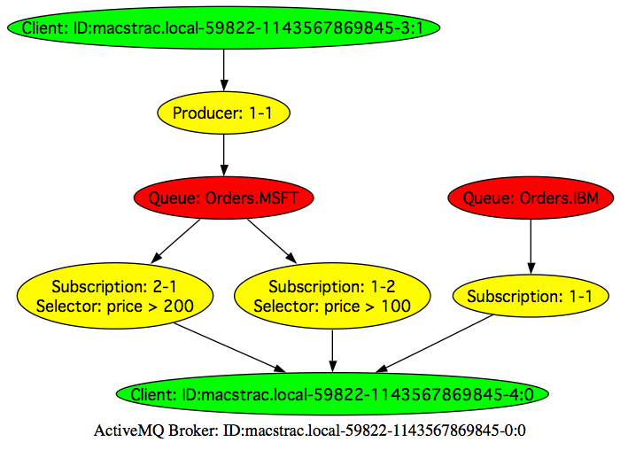
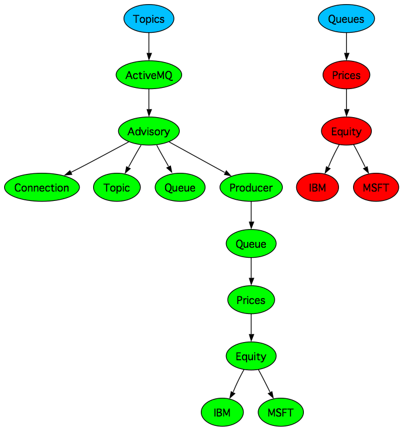

Apache ActiveMQ ™ -- Visualisation
Inspired greatly by Gregor and Erik's great talk at TSSJS 2006 we've started to add some visualisation plugins into Apache ActiveMQ.
Connection visualisation
There is a

Destination visualisation
There is a

A note for OS X users
If you are using OS X then you can open the DOT file using graphviz which will then automatically re-render if it changes, so you end up with a real time graphical representation of the topic and queue hierarchies.
Also if you want to edit the layout a little before adding it to a wiki to distribute to your team, open the DOT file with OmniGraffle then just edit away 
Visualisation Wish List
There are so many different things we could visualise; our only limitation is our imagination. So if you have any ideas for what we could visualise please add something to our Visualisation Wish List
External Open Source Tools
- hawtio is an open source HTML5 web application for working with Apache ActiveMQ and Apache Camel. It lets you create topics/queues, browse queues or send messages to destinations as well as visualising Camel routes and working with Camel endpoints along with viewing logs and metric charting etc.
- Fuse IDE is an open source set of eclipse plugins for working with Apache ActiveMQ and Apache Camel. Its got tooling for runtime browsing of queues, creating topics/queues. You can drag and drop messages to/from ActiveMQ destinations and Camel endpoints